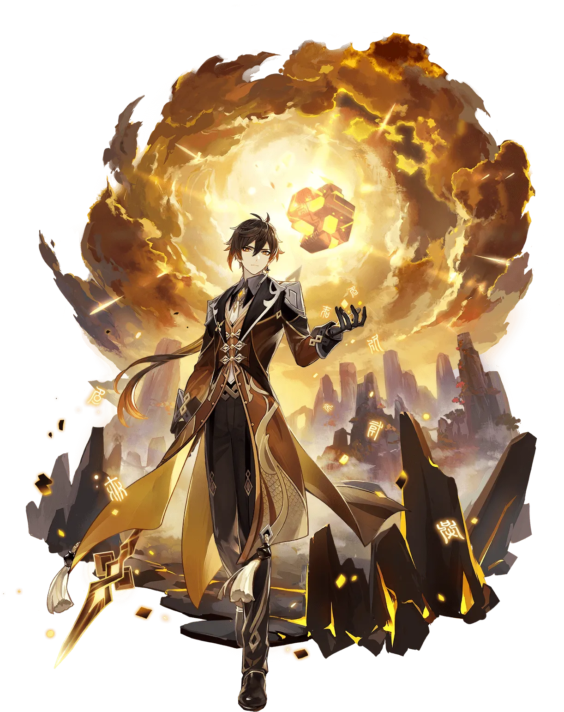
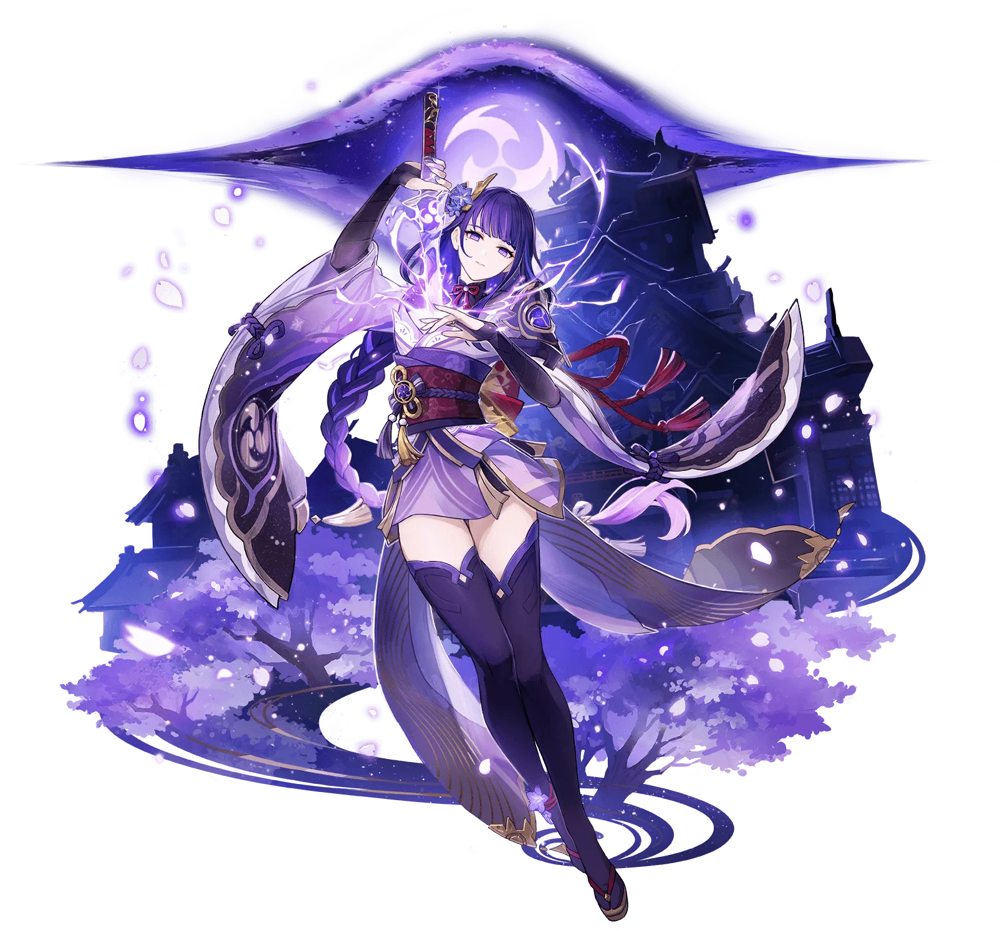
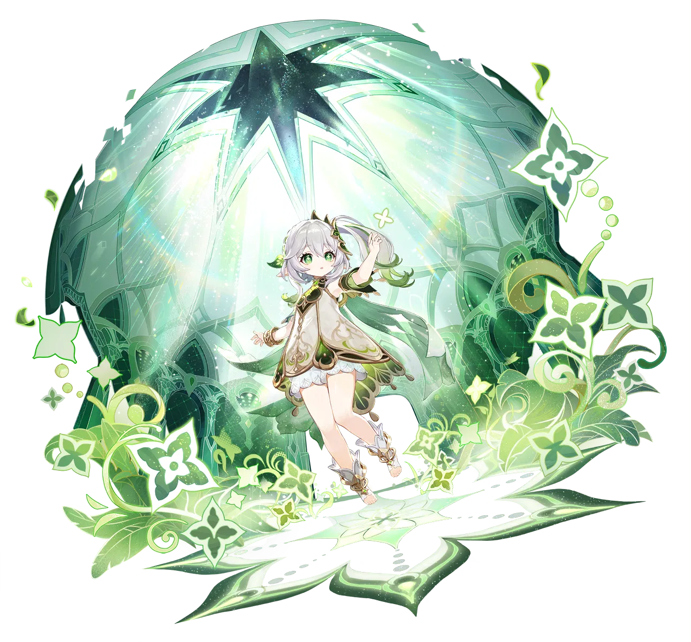

Typically shortened to The Seven, are the seven gods who preside over the seven regions of Teyvat, established after seven gods emerged as
the victors of the Archon War 2,000 years ago.
Each Archon is associated with an element and an ideal, by which they formed their territories' environment and determined their method of
governance over their regions.
Anemo
Freedom
Geo
Contract
Electro
Eternity
Dendro
Wisdom
Hydro
Justice
Pyro
War
Cryo
Unidentified
Venti
Winborne Bard
One of the many bards of Mondstadt, who freely wanders the city's streets and alleys.
God of Freedom
Known As
Barbatos
Lord Barbatos
Singer of The Skyward Sonnets
Introduction
A bard that seems to have arrived on some unknown wind — sometimes sings songs as old as the hills, and other times sings poems fresh
and new. Likes apples and lively places but is not a fan of cheese or anything sticky. When using his Anemo power to control the wind,
it often appears as feathers, as he's fond of that which appears light and breezy.
Trailer

Zhongli
Vago Mundo
A mysterious expert contracted by the Wangsheng Funeral Parlor. Extremely knowledgeable in all things.
God of Contract
Known As
Morax
Wangsheng Funeral Parlor Consultant
Introduction
Wangsheng Funeral Parlor's mysterious consultant. Handsome, elegant, and surpassingly learned. Though no one knows where Zhongli is
from, he is a master of courtesy and rules. From his seat at Wangsheng Funeral Parlor, he performs all manner of rituals.
Trailer

Raiden Shogun
Plane of Euthymia
Her Excellency, the Almighty Narukami Ogosho, who promised the people of Inazuma an unchanging Eternity.
God of Eternity
Known As
Beelzebul
Raiden Ei
Narukami Ogosho
Master of the Euthymic Plane
The Almighty Shogun
The Immortal Shogun
Introduction
The Raiden Shogun is the awesome and terrible power of thunder incarnate, the exalted ruler of the Inazuma Shogunate. With the might
of lightning at her disposal, she commits herself to the solitary pursuit of eternity.
"The Raiden Shogun is comprised of two beings in one body: Ei, the current Electro Archon of Inazuma; and
The Shogun, the puppet created by Ei to act as the ruler of Inazuma in her stead."
Trailer

Nahida
Physic of Purity
A caged bird secluded within the confines of the Sanctuary of Surasthana who can only see the world in her dreams.
God of Wisdom
Known As
Buer
Lesser Lord Kusanali
The First Akasha Terminal
Introduction
Lesser Lord Kusanali dwells deep in the Sanctuary of Surasthana, and has never really been in the limelight, nor has she even been
mentioned much. Her burden is heavy, but though she may experience loneliness, and though darkness is all she sees before her, she
will not stop moving forward.